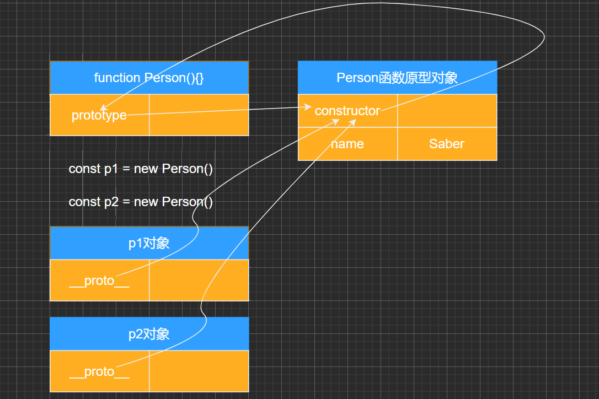

# 创建对象方案
# 字面量
# 工厂模式：工厂函数
| function createMaster(name, age) { |
| return { |
| name, |
| age, |
| sleeping() { |
| console.log(`${this.name} 在睡觉`); |
| } |
| } |
| } |
| |
| const Saber = createMaster("Saber", 16) |
| const Lain = createMaster("Lain", 20) |
| const nekoaimer = createMaster("nekoaimer", 30) |
| |
| |
| console.log(Saber, Lain, nekoaimer) |
| |
| Saber.sleeping() |
| Lain.sleeping() |
| nekoaimer.sleeping() |
# 构造函数
| |
| function Master(name, age) { |
| this.name = name |
| this.age = age |
| |
| this.sleeping = function() { |
| console.log(`${this.name} 在睡觉`) |
| } |
| } |
| |
| |
| var saber = new Master("Saber", 16) |
| var lain = new Master("Lain", 16) |
| |
| console.log(saber) |
| console.log(lain) |
| |
| saber.sleeping() |
| lain.sleeping() |
| |
| |
| console.log(saber === lain) |
# 对象原型理解
- JavaScript 当中每个对象都有一个特殊的内置属性 [[prototype]]，这个特殊的对象可以指向另外一个对象。
- 那么这个对象有什么用呢？
- 当我们通过引用对象的属性 key 来获取一个 value 时，它会触发 [[Get]] 的操作；
- 这个操作会首先检查该属性是否有对应的属性，如果有的话就使用它；
- 如果对象中没有改属性，那么会访问对象 [[prototype]] 内置属性指向的对象上的属性；
- 那么如果通过字面量直接创建一个对象，这个对象也会有这样的属性吗？如果有，应该如何获取这个属性呢？
- 获取的方式有两种：
- 方式一：通过对象的 proto 属性可以获取到（但是这个是早期浏览器自己添加的，存在一定的兼容性问
- 题）；
- 方式二：通过 Object.getPrototypeOf 方法可以获取到；
| |
| |
| const lain = { } |
| |
| |
| |
| |
| |
| console.log(lain.__proto__) |
| |
| |
| |
| |
| console.log(Object.getPrototypeOf(lain)) |
| |
| |
| |
| |
| |
| |
| lain.__proto__.age = 18 |
| |
| console.log(lain.age) |
# 函数的原型理解
- 那么我们知道上面的东西对于我们的构造函数创建对象来说有什么用呢？
- 这里我们又要引入一个新的概念：所有函数都有一个 prototype 的属性：
| function foo() { } |
| |
| console.log(foo.prototype) |
| function foo() {} |
| |
| |
| |
| |
| console.log(foo.prototype) |
| |
| const f1 = new foo() |
| const f2 = new foo() |
| |
| console.log(f1.__proto__ === foo.prototype) |
| console.log(f2.__proto__ === foo.prototype) |
# new 操作符
- new 关键字的步骤如下：
- 在内存中创建一个新的对象（空对象）；
- 这个对象内部的 [[prototype]] 属性会被赋值为该构造函数的 prototype 属性；
- 那么也就意味着我们通过 Person 构造函数创建出来的所有对象的 [[prototype]] 属性都指向 Person.prototype：
| function Person() {} |
| const p = new Person() |
| |
| p = {} |
| p.__proto__ = Person.prototype |
| |
| |
| console.log(p.__proto__ === Person.prototype) |
通过上面的图可以理解下面的代码了：
| function Person() {} |
| const p1 = new Person() |
| const p2 = new Person() |
| |
| console.log(p1.__proto__ === p2.__proto__) |
| console.log(p1.__proto__ === Person.prototype) |
| |
| p1.__proto__.friend = 'Saber' |
| console.log(p2.friend) |
| |
| Person.prototype.age = 16 |
| console.log(p1.__proto__.age) |
# 函数原型上的属性

# constructor 属性
| function foo() {} |
| |
| |
| |
| |
| console.log(Object.getOwnPropertyDescriptors(foo.prototype)) |
| |
| |
| Object.defineProperty(foo.prototype, "constructor", { |
| enumerable: true, |
| configurable: true, |
| writable: true, |
| |
| }) |
| console.log(foo.prototype.constructor) |
| |
| |
| |
| console.log(foo.prototype.constructor === foo) |
| console.log(foo.prototype.constructor.name) |
| |
| |
# 重写原型对 象
| function lain() {} |
| |
| lain.prototype = { |
| |
| name: "lain", |
| age: 16, |
| } |
| |
| |
| |
| |
| |
| |
| Object.defineProperty(lain.prototype, "constructor", { |
| enumerable: false, |
| configurable: true, |
| writable: true, |
| value: lain |
| }) |
| console.log(Object.getOwnPropertyDescriptors(lain.prototype)) |

# 构造函数和原型组合
| function Person(name, age) { |
| this.name = name |
| this.age = age |
| } |
| |
| Person.prototype.sleeping = function() { |
| console.log(this.name + " 在呼呼睡大觉~") |
| } |
| |
| var lain = new Person("Lain", 16) |
| var saber = new Person("Saber", 16) |
| |
| lain.sleeping() |
| saber.sleeping() |